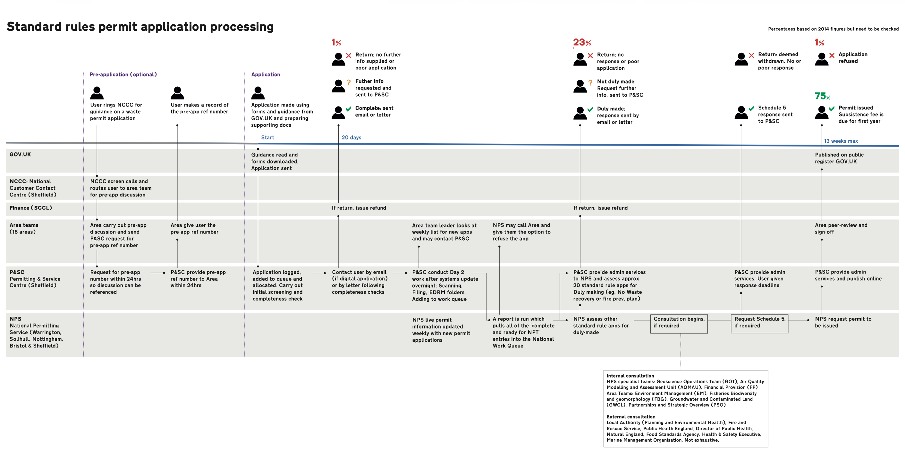
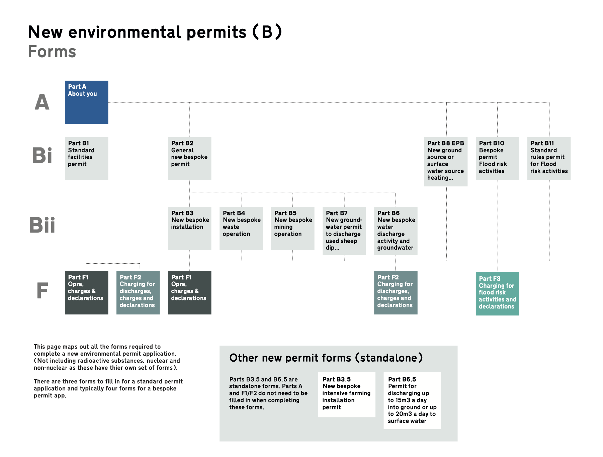
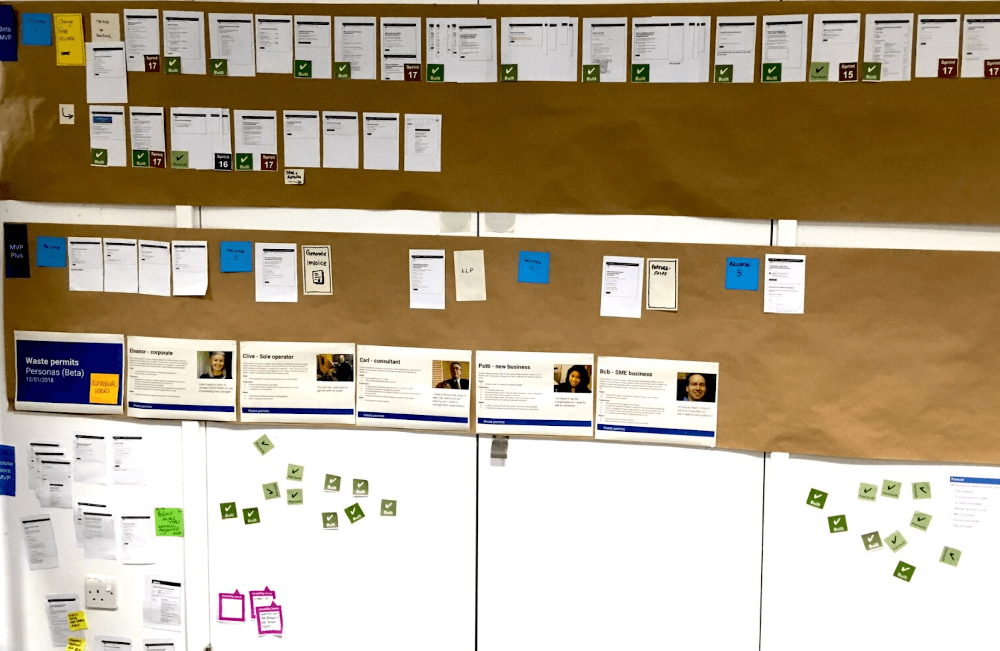

Company and dates: Environment Agency · Oct 2016 – Nov 2017
Designing a GOV.UK waste permitting service from the ground up
The Environment Agency is the government body responsible for protecting and improving the environment in England. Businesses working in the waste industry are required to hold licences and permits to operate legally, and the process for obtaining them was, at the time, a fragmented collection of around 20 to 30 PDF forms that was slow, complex and time-consuming for applicants.

The context
I joined the waste permits service team, as part of an ambitious, agile, cross-functional effort operating to Government Digital Service (GDS) standards. The goal was to design and deliver a service that made it significantly easier for businesses to apply for standard rules waste permits online, while meeting the rigorous design and accessibility standards required of all GOV.UK services.
My role
Interaction Designer, to . I collaborated with user researchers, content designers, service designers, developers and product managers to move from discovery through to GDS assessment.
What I did
Designing the service, iterating with users
For the waste permits service, applying the GDS 'one thing per page' principle and the multiple tasks pattern helped simplify a complex, multi-route application process. Prototyping and research sessions were all part of the process, with designs iterated based on direct feedback from users of the service, including the more complex application types. Mapping the service together on a wall was a practical example of working in the open, helping the team align quickly on a true minimum viable product and keeping everyone focused on the same goal. The approach was rooted in making a difficult process as clear and straightforward as possible.


Connecting with the wider GDS community
I completed specialist GDS training and took part in cross-government design community events, contributing to shared standards and approaches. Alongside this, I produced an editable GOV.UK wireframing kit in Google Slides, which was adopted by designers across multiple government departments and agencies.
Outcomes
-
Release date brought forward
-
Of applications served by new online process
-
Successful Minimum Viable Product approach